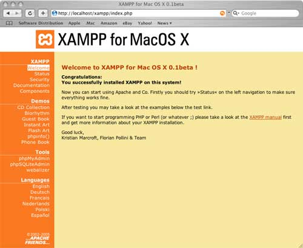

- Introducción
- 1. Introducción al desarrollo Web
- 2. Introducción a JavaScript
- 3. Diseño Responsive
- 4. Diseño Responsive avanzado
- 5. JQuery Mobile
- 6. JQuery Mobile avanzado
- 7. Sencha Touch 1. Introducción
- 8. Sencha Touch 2. Componentes
- 9. Sencha Touch 3. Almacenamiento
- 10. PhoneGap 1. Introducción
- 11. PhoneGap 2. Avanzado
- 12. Laravel 1. Introducción
- 13. Laravel 2. Controladores, filtros y formularios
- 14. Laravel 3. Base de datos
- 15. Laravel 4. Datos de entrada y control de usuarios
- 16. Laravel 5. Paquetes, Rest y Curl
- 17. Servicios Rest
- Published using GitBook
Laravel 1 - Introducción
¿Qué es Laravel?
Laravel es un framework de código abierto para el desarrollo de aplicaciones web en PHP 5 que posee una sintaxis simple y elegante.
Características:
- Creado en 2011 por Taylor Otwell.
- Esta inspirado en Ruby on rails y Symfony, de quien posee muchas dependencias.
- Esta diseñado para desarrollar bajo el patrón MVC (ver siguiente sección).
- Posee un sistema de mapeado de datos relacional llamado Eloquent ORM.
- Utiliza un sistema de procesamiento de plantillas llamado Blade, el cual hace uso de la cache para darle mayor velocidad.
Modelo - Vista - Controlador (MVC)
El modelo–vista–controlador (MVC) es un patrón de arquitectura de software que separa los datos y la lógica de negocio de una aplicación de la interfaz de usuario y el módulo encargado de gestionar los eventos y las comunicaciones. Para ello MVC propone la construcción de tres componentes distintos que son el modelo, la vista y el controlador, es decir, por un lado define componentes para la representación de la información, y por otro lado para la interacción del usuario. Este patrón de arquitectura de software se basa en las ideas de reutilización de código y la separación de conceptos, características que buscan facilitar la tarea de desarrollo de aplicaciones y su posterior mantenimiento.

De manera genérica, los componentes de MVC se podrían definir como sigue:
El Modelo: Es la representación de la información con la cual el sistema opera, por lo tanto gestiona todos los accesos a dicha información, tanto consultas como actualizaciones. Las peticiones de acceso o manipulación de información llegan al 'modelo' a través del 'controlador'.
El Controlador: Responde a eventos (usualmente acciones del usuario) e invoca peticiones al 'modelo' cuando se hace alguna solicitud de información (por ejemplo, editar un documento o un registro en una base de datos). Por tanto se podría decir que el 'controlador' hace de intermediario entre la 'vista' y el 'modelo'.
La Vista: Presenta el 'modelo' y los datos preparados por el controlador al usuario de forma visual. El usuario podrá interactuar con la vista y realizar otras peticiones que se enviarán al controlador.
Instalación de Laravel
Para la utilización de Laravel en primer lugar necesitamos tener instalado un servidor Web Apache con PHP >= 5.4, MySQL y la extensión MCrypt de PHP. Una vez instalado el servidor procederemos a instalar la utilidad Composer y por último la librería de Laravel. A continuación se describen los pasos a seguir.
Instalación del servidor Web XAMPP
Como servidor Web para Mac vamos a utilizar la versión de XAMPP de ApacheFriends. Para su instalación seguiremos los siguientes pasos:
En primer lugar abrimos su página web "https://www.apachefriends.org", entramos en la sección de descargas y bajamos la última versión para Mac.
Esto descargará una imagen tipo DMG (en el caso de Mac), hacemos doble clic encima para iniciar el proceso de instalación.
Al finalizar habrá instalado el servidor en la ruta
/Applications/XAMPP.
Con esto ya tenemos un servidor Web instalado en nuestro ordenador. Ahora para iniciarlo y pararlo solo tendremos que acceder a su Panel de Control e iniciar o parar Apache y MySQL. El nombre de la aplicación de Panel de Control de XAMPP es "manager-osx".
Desde este mismo panel de control, además de poder iniciar o parar los servicios, podemos ver el log, abrir la carpeta de disco donde tenemos que almacenar nuestro proyectos Web (por defecto situada en /Applications/XAMPP/htdocs) o abrir la URL de nuestro servidor web en un navegador (http://localhost/xampp/).
Para comprobar que el servidor se ha instalado correctamente podemos abrir la siguiente URL en el navegador:
http://localhost
Esto nos mostrará la página por defecto de XAMPP, que contiene algunos links para comprobar el estado del software instalado y algunos ejemplos de programación.

Si ya hubiese un servidor web instalado en el ordenador es posible que entre en conflicto con XAMPP y no permita iniciar el servicio de Apache. En este caso tendremos que detener el otro servidor (
sudo apachectl stop) para poder utilizar XAMPP.
Desde la versión 4 de Laravel, la creación de un proyecto nuevo se realiza con Composer. Veamos entonces que es Composer y que necesitamos para usarlo.
Instalación de Composer
Composer es un gestor de dependencias para PHP. Esto quiere decir que permite descargar de sus repositorios todas las librerías y las dependencias con las versiones requeridas que el proyecto necesite.
Instalar Composer es muy sencillo por linea de comandos. Si accedemos a su página web en "https://getcomposer.org/" podemos consultar las instrucciones, simplemente tendremos que hacer:
$ curl -sS https://getcomposer.org/installer | php
$ sudo mv composer.phar /usr/local/bin/composer
El primer comando descarga el archivo composer.phar en nuestro ordenador (.phar es una extensión para aplicaciones PHP comprimidas). El segundo comando mueve el archivo descargado a la carpeta bin para que Composer pueda ser ejecutado de forma global.
Por último verificamos la instalación con el siguiente comando:
$ composer
Si la instalación se ha realizado correctamente se nos debería mostrar una lista de los comandos y opciones que tiene Composer.
Instalar Laravel mediante Composer
En la carpeta raíz de nuestro servidor web (/Applications/XAMPP/htdocs) ejecutamos el siguiente comando:
$ composer create-project laravel/laravel miweb --prefer-dist
Esto nos descargará la última versión de Laravel y creará una carpeta llamada miweb con todo el contenido ya preparado. Si nos apareciera algún error de permisos tendríamos que ejecutar de nuevo el mismo comando pero con sudo.
Si accedemos a la carpeta que se acaba de crear (cd miweb) y ejecutamos $ php artisan comprobaremos que nos aparece el siguiente error:
Mcrypt PHP extension required.
Esto es debido a que Laravel require la extensión Mcrypt para su utilización. En la siguiente sección se explica como solucionar este error.
Instalación de Mcrypt
Para instalar Mcrypt seguiremos los siguientes pasos:
- Ejecutamos
which phppara comprobar la ruta del php utilizado, la cual deberá ser (/usr/bin/php). - A continuación escribimos:
sudo nano ~/.bash_profile
- Al final de este fichero añadimos la siguiente línea:
PATH="/Applications/XAMPP/xamppfiles/bin:$PATH"
- Y por último presionamos Ctrl+O para guardar los cambios y Ctrl-X para salir.
Con esto hemos añadido al PATH del sistema la ruta de los ejecutables que incorpora XAMPP, entre los cuales se incluye Mcrypt. Para que se actualice el PATH cerramos el terminal actual y volvemos a abrir uno. Ahora si escribimos otra vez which php nos tendrá que aparecer la nueva ruta: /Applications/XAMPP/xamppfiles/bin/php. Para comprobar que ya funciona el CLI de Laravel accedemos a la ruta donde lo hemos instalado (/Applications/XAMPP/htdocs/miweb) y ejecutamos php artisan, lo cual nos tendría que mostrar:
Laravel Framework version 4.2.16
Usage:
[options] command [arguments]
Options:
--help
...
Con esto ya tenemos instalado un servidor Web y Laravel funcionando, pero todavía nos falta terminar de configurar nuestra nueva Web con Laravel para que funcione correctamente.
Configuración inicial de Laravel
Lo primero que tenemos que hacer después de crear un nuevo proyecto con Laravel es configurar la key o clave de la aplicación. Esta clave es una cadena de 32 caracteres que se utiliza para codificar los datos. En caso de no establecerla (revisar el fichero app/config/app.php) nuestra aplicación no será segura. Para establecerla tenemos que ejecutar el siguiente comando en la carpeta raíz de nuestra aplicación:
php artisan key:generate
Además tenemos que establecer los permisos de algunas carpetas especiales. En general no es necesario añadir permisos de escritura para los archivos de nuestra aplicación, solo tendremos que hacerlo para la carpeta app/storage, que es donde Laravel almacena los logs, sesiones, chaché, etc. Para establecer estos permisos simplemente tenemos que ejecutar:
sudo chmod -R 777 app/storage/
Comprobación de Laravel
Una vez completados todos los pasos ya podemos comprobar nuestra nueva página web con Laravel. Para esto abrimos un navegador y accedemos a la siguiente URL:
http://localhost/<nombre-de-tu-proyecto-web>/public/
# En nuestor caso sería:
http://localhost/miweb/public/
Nos aparecerá una página web por defecto como la siguiente:
Estructura de un proyecto
Al crear un nuevo proyecto de Laravel se nos generará la siguiente estructura de carpetas y ficheros:
/app– Contiene los controladores, modelos, vistas y configuraciones de la aplicación. En esta carpeta escribiremos la mayoría del código para que nuestra aplicación funcione./public– Es la única carpeta pública, la única que debería ser visible en nuestro servidor web. Todo las peticiones y solicitudes a la aplicación pasan por esta carpeta, ya que en ella se encuentra elindex.php, este archivo es el que inicia todo el proceso de ejecución del framework. En este directorio también se alojan los archivos CSS, Javascript, imágenes y otros archivos que se quieran hacer públicos./vendor– En esta carpeta se alojan todas las librerías que conforman el framework y sus dependencias./app/lang– En esta carpeta se guardan archivos PHP que contienen arrays con los textos de nuestro sitio web en diferentes lenguajes, solo será necesario utilizarla en caso que se desee que la aplicación se pueda traducir./app/config– Aquí se encuentran todos los archivos de configuración de la aplicación: base datos, cache, correos, sesiones o cualquier otra configuración general de la aplicación./app/controller– Contiene todos los archivos con las clases de los controladores que sirven para interactuar con los modelos, las vistas y manejar la lógica de la aplicación./app/model– Los modelos son clases que representan la información (datos) de la aplicación y las reglas para manipularlos. En la mayoría de los casos cada tabla de la base datos esta representada con un modelo. La lógica de negocio de la aplicación está contendía en los modelos./app/views– Este directorio contiene las vistas de nuestra aplicación. En general serán plantillas de HTML que usan los controladores para mostrar la información. Hay que tener en cuenta que en esta carpeta no se almacenan los Javascript, CSS o imágenes, ese tipo de archivos se tienen que guardar en la carpeta/public./app/storage– En esta carpeta Laravel almacena toda su información interna necesaria para la ejecución de la web, como son los archivos de sesión, la caché, la compilación de las vistas, meta información y los logs del sistema./app/filter.php– Este fichero contiene los filtros que podemos utilizar para validación del uso de determinadas rutas o secciones de la web./app/routes.php– Este documento define todas las rutas de nuestro sitio web, enlazando una URL del navegador con un método de un controlador. Además nos permite realizar validaciones y otras operaciones sobre las rutas de nuestro sitio.composer.json– Este fichero es el utilizado por Composer para realizar la instalación de Laravel. En una instalación inicial únicamente se especificará la instalación de un paquete, el propio framework de Laravel, pero podemos especificar la instalación de otras librerías o paquetes que añadan funcionalidad a Laravel.
Funcionamiento básico
El funcionamiento básico que sigue Laravel tras una petición web a una URL de nuestro sitio es el siguiente:
Todas las peticiones entran a través del fichero
index.php, el cual en primer lugar comprobará en el fichero de rutas (routes.php) si la URL es válida y en caso de serlo a que controlador tiene que hacer la petición.A continuación se llamará al método del controlador asignado para dicha ruta. Como hemos visto, el controlador es el punto de entrada de las peticiones del usuario, el cual, dependiendo de la petición:
- Accederá a la base de datos (si fuese necesario) a través de los "modelos" para obtener datos (o para añadir, modificar o eliminar).
- Tras obtener los datos necesarios los preparará para pasárselos a la vista.
En el tercer paso el controlador llamará a una vista con una serie de datos asociados, la cual se preparará para mostrarse correctamente a partir de los datos de entrada y por último se mostrará al usuario.
A continuación se incluye un pequeño esquema de este funcionamiento:
En las siguientes secciones iremos viendo cada uno de estos apartados por separado. En primer lugar se estudiará como podemos definir las rutas que tiene nuestra aplicación y como las tenemos que enlazar con los controladores. Seguidamente se verán los controladores y vistas, dejando los modelos de datos y el uso de la base de datos para más adelante.
Rutas
Las rutas de nuestra aplicación aplicación se tienen que definir en el fichero app/routes.php. Como hemos visto este es el punto centralizado para la definición de rutas, y cualquier ruta no definida en este fichero no será válida, generado una excepción (lo que devolverá un error 404).
Las rutas, en su forma más sencilla, pueden devolver directamente un valor desde el propio fichero de rutas, pero también podrán generar la llamada a una vista o a un controlador. Empezaremos viendo el primer tipo de rutas y en secciones posteriores se tratará como enlazarlas con una vista o con un controlador.
Rutas básicas
Las rutas, además de definir la URL de la petición, también indican el método con el cual se ha de hacer dicha petición. Los dos métodos más utilizados y que empezaremos viendo son las peticiones tipo GET y tipo POST. Por ejemplo, para definir una petición tipo GET tendríamos que añadir el siguiente código a nuestro fichero routes.php:
Route::get('/', function()
{
return '¡Hola mundo!';
});
Este código se lanzaría cuando se realice una petición tipo GET a la ruta raíz de nuestra aplicación. Si estamos trabajando en local esta ruta sería http://localhost pero cuando la web esté en producción se referiría a la dirección http://www.dirección-de-tu-web.com. Es importante indicar que si se realiza una petición tipo POST se devolvería un error ya que esa ruta no está definida.
Para definir una ruta tipo POST se realizaría de la misma forma pero cambiando el verbo GET por POST:
Route::post('foo/bar', function()
{
return '¡Hola mundo!';
});
En este caso la ruta apuntaría a la dirección URL foo/bar (http://localhost/foo/bar o http://www.dirección-de-tu-web.com/foo/bar).
Si queremos que una ruta se defina a la vez para varios verbos lo podemos hacer añadiendo un array con los tipos, de la siguiente forma:
Route::match(array('GET', 'POST'), '/', function()
{
return '¡Hola mundo!';
});
O para cualquier tipo de petición HTTP utilizando el método any:
Route::any('foo', function()
{
return '¡Hola mundo!';
});
Añadir parámetros a las rutas
Si queremos añadir parámetros a una ruta simplemente los tenemos que indicar entre llaves {} a continuación de la ruta, de la forma:
Route::get('user/{id}', function($id)
{
return 'User '.$id;
});
En este caso estamos definiendo la ruta /user/{id}, donde id es requerido y puede ser cualquier valor. En caso de no especificar ningún id se produciría un error. El parámetro se le pasará a la función, el cual se podrá utilizar (como veremos más adelante) para por ejemplo obtener datos de la base de datos, almacenar valores, etc.
También podemos indicar que un parámetro es opcional simplemente añadiendo el símbolo ? al final (y en este caso no daría error si no se realiza la petición con dicho parámetro):
Route::get('user/{name?}', function($name = null)
{
return $name;
});
// También podemos poner algún valor por defecto...
Route::get('user/{name?}', function($name = 'Javi')
{
return $name;
});
Laravel también permite el uso de expresiones regulares para validar los parámetros que se le pasan a una ruta. Por ejemplo, para validar que un parámetro esté formado solo por letras o solo por números:
Route::get('user/{name}', function($name)
{
//
})
->where('name', '[A-Za-z]+');
Route::get('user/{id}', function($id)
{
//
})
->where('id', '[0-9]+');
// Si hay varios parámetros podemos validarlos usando un array:
Route::get('user/{id}/{name}', function($id, $name)
{
//
})
->where(array('id' => '[0-9]+', 'name' => '[A-Za-z]+'))
Generar una ruta
Cuando queramos generar la URL hasta una ruta podemos utilizar el siguiente método:
$url = URL::to('foo');
Con este método nos aseguraremos que la URL sea válida y además se le añadirá el dominio que tengamos definido en los ficheros de configuración. En general no será necesaria su utilización y simplemente podremos escribir la ruta a mano hasta una dirección de la forma: /foo (anteponiendo la barra / para asegurarnos que la ruta sea a partir de la raíz del dominio de nuestro sitio.
Artisan
Laravel incluye un interfaz de línea de comandos (CLI, Command line interface) llamado Artisan. Esta utilidad nos va a permitir realizar múltiples tareas necesarias durante el proceso de desarrollo o despliegue a producción de una aplicación, por lo que nos facilitará y acelerará el trabajo.
Para ver una lista de todas las opciones que incluye Artisan podemos ejecutar el siguiente comando en un consola o terminal del sistema en la carpeta raíz de nuestro proyecto:
php artisan list
# O simplemente:
php artisan
Si queremos obtener una ayuda más detallada sobre alguna de las opciones de Artisan simplemente tenemos que escribir la palabra help delante del comando en cuestión, por ejemplo:
php artisan help migrate
En secciones anteriores ya hemos utilizado uno de estos comandos, php artisan key:generate, para generar la clave de encriptación de nuestro proyecto Web. Poco a poco iremos viendo más opciones de Artisan.
Por ejemplo, para ver un listado con todas las rutas que hemos definido en el fichero routes.php podemos ejecutar el comando:
php artisan routes
Vistas
Las vistas son la forma de presentar el resultado (una pantalla de nuestro sitio web) de forma visual al usuario, el cual podrá interactuar con él y volver a realizar una petición. Las vistas además nos permiten separar toda la parte de presentación de resultados de la lógica (controladores) y de la base de datos (modelos). Por lo tanto no tendrán que realizar ningún tipo de consulta ni procesamiento de datos, simplemente recibirán datos y los prepararán para mostrarlos como HTML.
Las vistas se almacenan en la carpeta app/views como ficheros PHP. Contendrán el código HTML de nuestro sitio web, mezclado con los assets (CSS, imágenes, Javascripts, etc. que estarán almacenados en la carpeta public) y algo de código PHP (o código Blade de plantillas, como veremos más adelante) para presentar los datos de entrada como un resultado HTML.
A continuación se incluye un ejemplo de una vista simple, almacenada en el fichero app/views/home.php, que simplemente mostrará por pantalla ¡Hola <nombre>!, donde <nombre> es una variable que la vista tiene que recibir como entrada para poder mostrarla.
<html>
<head>
<title>Mi Web</title>
</head>
<body>
<h1>¡Hola <?php echo $name; ?>!</h1>
</body>
</html>
Ya tenemos nuestra primera vista, pero ahora tenemos que asociarla a una ruta para poder mostrarla. Para esto tenemos que ir al fichero routes.php como hemos visto antes y escribir el siguiente código:
Route::get('/', function()
{
return View::make('home', array('name' => 'Javi'));
});
En este caso estamos definiendo que la ruta se devuelva cuando se haga una petición tipo GET a la raíz de nuestro sitio. El único cambio que hemos hecho ha sido en el valor devuelto por la función, el cual genera la vista con View::make y la devuelve. Esta función recibe como parámetros:
- El nombre de la vista:
homeel cual será un fichero almacenado en la carpetaviews, acordaros que la vista anterior de ejemplo la habíamos guardado enapp/views/home.php. Para indicar el nombre de la vista se utiliza el mismo nombre del fichero pero sin la extensión.php. - Un array de datos que se le pasarán a la vista. En este caso la vista recibirá una variable llamada
$namecon valor "Javi".
A la hora de pasar datos a una vista tenemos más alternativas (todas son equivalentes), usando el método with o el método with<VarName>, donde <VarName> es el nombre de la variable:
// Usando el método with:
$view = View::make('home')->with('name', 'Javi');
// Usando el método with "mágico"!:
$view = View::make('home')->withName('Javi');
En los ejemplos anteriores obtendríamos el mismo resultado, se le paría una variable con nombre $name a la vista con el valor "Javi".
Vistas dentro de vistas
Laravel también permite anidar vistas, es decir, renderizar una vista dentro de otra vista. Por ejemplo, si queremos mostrar la vista almacenada en app/views/partials/view.php dentro de la vista que habíamos creado en el ejemplo anterior (app/views/home.php), tendríamos que hacer lo siguiente:
$view = View::make('home')->nest('content', 'partials.view');
// También podemos pasarle datos a la vista hija...
$view = View::make('home')->nest('content', 'partials.view', $data);
El código anterior generaría la vista padre (home) y en su variable content colocaría la vista hija partials.view. Para indicar la ruta hasta vistas que están almacenadas dentro de carpetas, en lugar de escribir la barra / como separador se utiliza el punto (.).
<html>
<body>
<h1>¡Hola!</h1>
<?php echo $content; ?>
</body>
</html>
Plantillas mediante Blade
Laravel utiliza Blade para la definición de plantillas en las vistas. Esta librería permite realizar todo tipo de operaciones con los datos, además de la sustitución de secciones de las plantillas por otro contenido, herencia entre plantillas, definición de layouts o plantillas base, etc.
Los ficheros de vistas que utilizan el sistema de plantillas Blade tienen que tener la extensión .blade.php. Esta extensión tampoco se tendrá que incluir a la hora de referenciar una vista desde el fichero de rutas o desde un controlador. Es decir, utilizaremos View::make('home') tanto si el fichero se llama home.php como home.blade.php.
En general el código que incluye Blade en una vista empezará por los símbolos @ o {{, el cual posteriormente será procesado y preparado para mostrarse por pantalla.
El método más básico que tenemos en Blade es el de mostrar datos, para esto utilizaremos las triples llaves ({{{ }}}) como se muestra a continuación:
Hola {{{ $name }}}!.
La hora actual es {{{ time() }}}.
Podemos mostrar el contenido de una variable o incluso llamar a una función para mostrar su resultado. Si por ejemplo queremos comprobar que una variable existe o tiene un determinado valor, podríamos utilizar el operador ternario de la forma:
{{{ isset($name) ? $name : 'Default' }}}
O simplemente usar la notación que incluye Blade para este fin:
{{{ $name or 'Default' }}}
Al utilizar las triples llaves ({{{ }}}) Blade escapa los datos a mostrar, evitando posibles errores. Si no queremos que escape los datos simplemente tendremos que utilizar la doble llave ({{ }}) de la forma:
Hola {{ $name }}!.
Nota: En general tendremos que usar las triples llaves siempre que vayamos a mostrar datos que son proporcionados por los usuarios de la aplicación. Esto evitará que inyecten símbolos que produzcan errores.
Para definir comentarios se utilizan los símbolos {{-- y --}}, por ejemplo:
{{-- Este comentario no se mostrará en HTML --}}
Estructuras de control
Blade nos permite utilizar la estructura if de las siguientes formas:
@if( count($users) === 1 )
Solo hay un usuario!
@elseif (count($users) > 1)
Hay muchos usuarios!
@else
No hay ningún usuario :(
@endif
En los siguientes ejemplo se puede ver como realizar bucles tipo for, while o foreach:
@for ($i = 0; $i < 10; $i++)
El valor actual es {{ $i }}
@endfor
@while (true)
<p>Soy un bucle while infinito!</p>
@endwhile
@foreach ($users as $user)
<p>Usuario {{ $user->name }} con identificador: {{ $user->id }}</p>
@endforeach
Incluir una plantilla dentro de otra plantilla
En Blade, dentro de una plantilla, podemos indicar que se incluyan otras plantillas utilizando la instrucción @include:
@include('view_name')
<!-- También podemos pasarle un array de datos como segundo parámetro -->
@include('view_name', array('some'=>'data'))
Layouts
Blade también nos permite la definición de layouts para crear una estructura HTML base con secciones que serán rellenadas por otras plantillas. Por ejemplo, crear un layout con las etiquetas principales de HTML (head, body, etc.) y una serie de secciones que serán rellenados por otras plantillas para completar el código. Este layout puede ser utilizado para todas las pantallas de nuestro sitio web, lo que nos permite que en el resto de plantillas no tengamos que repetir todo este código.
A continuación de incluye un ejemplo de una plantilla tipo layout almacenada en el fichero app/views/layouts/master.blade.php:
<html>
<head>
<title>Mi Web</title>
</head>
<body>
@section('menu')
Contenido del menu
@show
<div class="container">
@yield('content')
</div>
</body>
</html>
Posteriormente, en otra plantilla, podemos decir que extienda el layout que hemos creado (@extends('layouts.master')) y que complete las dos secciones de contenido que habíamos definido en el mismo:
@extends('layouts.master')
@section('menu')
<p>Este condenido es añadido al menú principal.</p>
@stop
@section('content')
<p>Este apartado aparecerá en la sección "content".</p>
@stop
Como se puede ver, las vistas que extiende un layout simplemente tienen que sobreescribir las secciones del layout. La directiva @section permite ir añadiendo contenido en las plantillas hijas, mientras que @yield será sustituido por el contenido que se indique. Además, si queremos establecer un contenido por defecto para @yield lo podemos hacer como se muestra a continuación:
@yield('section', 'Contenido por defecto')
Ejercicios
En los ejercicios de esta sección del curso vamos a desarrollar una pequeña web para la gestión interna de un videoclub, empezaremos por definir las rutas y vistas del sitio y poco a poco en los siguientes ejercicios la iremos completando hasta terminar el sitio web completo.
El objetivo es un sitio web para su utilización de forma interna en un videoclub, el cual estará protegido por usuario y contraseña. Una vez validado el usuario permitirá listar el catálogo de películas, ver información detalle de una película, realizar búsquedas o filtrados y algunas operaciones de gestión.
Ejercicio 1 - Instalación de Laravel (0.5 puntos)
En primer lugar tenemos que instalar todo lo necesario para poder realizar el sitio web con Laravel. Para esto seguiremos las explicaciones del apartado que hemos visto en la teoría "Instalación de Laravel" para instalar un servidor Web y Composer.
Una vez instalado crearemos un nuevo proyecto de Laravel en la carpeta videoclub, lo configuraremos (clave de seguridad, permisos, etc.) y probaremos que todo funcione correctamente.
Ejercicio 2 - Definición de las rutas (0.5 puntos)
En este ejercicio vamos a definir las rutas principales que va a tener nuestro sitio web. Para empezar simplemente indicaremos que las rutas devuelvan una cadena (así podremos comprobar que se han creado correctamente). A continuación se incluye una tabla con las rutas a definir (todas de tipo GET) y el texto que tienen que mostrar:
| Ruta | Texto a mostrar |
|---|---|
| / | Pantalla principal |
| login | Login usuario |
| logout | Logout usuario |
| catalog | Listado películas |
| catalog/show/{id} | Vista detalle película {id} |
| catalog/create | Añadir película |
| catalog/edit/{id} | Modificar película {id} |
Para comprobar que las rutas se hayan creado correctamente utiliza el comando de artisan que devuelve un listado de rutas y además prueba también las rutas en el navegador.
Ejercicio 3 - Layout principal de las vistas con Bootstrap (1 punto)
En este ejercicio vamos a crear el layout base que van a utilizar el resto de vistas del sitio web y además incluiremos la librería Bootstrap para utilizarla como estilo base.
En primer lugar accedemos a la web "http://getbootstrap.com/" y descargamos la librería. Esto nos bajará un fichero zip comprimido con tres carpetas (js, css y fonts) que tenemos que extraer en la carpeta "public/assets/bootstrap" (tendremos que crear las carpetas "/assets/bootstrap").
También nos tenemos que descargar desde los materiales de los ejercicios la plantilla para la barra de navegación principal (navbar.blade.php) y la almacenamos en la carpeta views/partials.
A continuación vamos a crear el layout principal de nuestro sitio:
- Creamos el fichero
app/views/layouts/master.blade.php. - Le añadimos como contenido la plantilla base HTML que propone Bootstrap en su documentación "http://getbootstrap.com/getting-started/#template", modificando los siguientes elementos:
- Cambiamos las rutas para acceder a los assets (css y js) que hemos almacenado en local. Para generar la ruta completa y que encuentre los recursos tendremos que escribir los siguientes comandos:
{{ URL::to('/assets/bootstrap/css/bootstrap.min.css') }} {{ URL::to('/assets/bootstrap/js/bootstrap.min.js') }}assets/bootstrap/css/bootstrap.min.css(sin barra/inicial). - Dentro de la sección
<body>del HTML incluimos la barra de navegación que hemos guardado antes utilizando el siguiente código:@include('partials.navbar') - A continuación de la barra de navegación añadimos la sección principal donde aparecerá el contenido de la web:
<div class="container"> @yield('content') </div>
- Cambiamos las rutas para acceder a los assets (css y js) que hemos almacenado en local. Para generar la ruta completa y que encuentre los recursos tendremos que escribir los siguientes comandos:
Con esto ya hemos definido el layout principal, sin embargo todavía no podemos probarlo ya que no está asociado a ninguna ruta. En el siguiente ejercicio realizaremos los cambios necesarios para poder verlo y además añadiremos el resto de vistas hijas.
Ejercicio 4 - Crear el resto de vistas (1 punto)
En este ejercicio vamos terminar una primera versión estable de la web. En primer lugar crearemos las vistas asociadas a cada ruta, las cuales tendrán que extender del layout que hemos hecho en el ejercicio anterior y mostrar, en la sección de content del mismo, el texto de ejemplo que habíamos definido para las vistas en el ejercicio 2. En general todas las vistas tendrán un código similar al siguiente (variando únicamente la sección content):
@extends('layouts.master')
@section('content')
Pantalla principal
@stop
Para organizar mejor las vistas las vamos a agrupar en sub-carpetas dentro de la carpeta views siguiendo la siguiente estructura:
| Vista | Carpeta | Ruta asociada |
|---|---|---|
home.blade.php |
views/ |
/ |
login.blade.php |
views/user/ |
login |
index.blade.php |
views/catalog/ |
catalog |
show.blade.php |
views/catalog/ |
catalog/show/{id} |
create.blade.php |
views/catalog/ |
catalog/create |
edit.blade.php |
views/catalog/ |
catalog/edit/{id} |
Creamos una vista separada para todas las rutas excepto para la ruta "logout", la cual no tendrá ninguna vista.
Por último vamos a actualizar las rutas del fichero routes.php para que se carguen las vistas que acabamos de crear. Acordaros que para referenciar las vistas que están dentro de carpetas la barra / de separación se transforma en un punto, y que además, como segundo parámetro, podemos pasar datos a la vista. A continuación se incluyen algunos ejemplos:
return View::make('home');
return View::make('catalog.index');
return View::make('catalog.show', array('id'=>$id));
Una vez hechos estos cambios ya podemos probarlo en el navegador, el cual debería mostrar en todos los casos la plantilla base con la barra de navegación principal y los estilos de Bootstrap aplicados. En la sección principal de contenido de momento solo podremos ver los textos que hemos puesto de ejemplo.